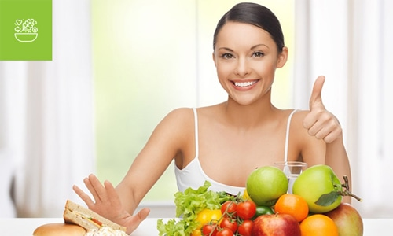

Beslenme Stratejileri
Sağlıklı beslenme, vücudun ihtiyaç duyduğu besinleri dengeli ve doğru şekilde almayı içeren önemli bir yaşam tarzıdır. Sağlıklı beslenme, sağlıklı yaşamın temel taşlarından biridir ve birçok kronik hastalığın önlenmesinde önemli bir rol oynar. Sağlıklı beslenmenin temel prensiplerinden biri çeşitlilik ve dengelidir. Günlük beslenme programınızda meyve, sebze, tam tahıl, protein kaynakları ve sağlıklı yağlara yer vermek önemlidir. Bu besin gruplarından yeterli miktarda almak, vücudunuzun ihtiyaç duyduğu vitamin, mineral ve diğer besin öğelerini almanıza yardımcı olur. Ayrıca, sağlıklı beslenmenin bir diğer önemli yönü porsiyon kontrolüdür. Ne kadar yediğiniz kadar ne yediğiniz de önemlidir. Dengeli porsiyonlarla beslenmek, aşırı kalori alımını önler ve kilo kontrolüne yardımcı olur. Sağlıklı beslenme aynı zamanda sıvı alımını da içerir. Günde en az 8 bardak su içmek vücudunuzun düzgün çalışmasını sağlar ve sağlıklı bir cilt için önemlidir. Son olarak, sağlıklı beslenme alışkanlıklarının sadece fiziksel sağlığınızı değil, aynı zamanda ruh sağlığınızı da olumlu yönde etkilediği unutulmamalıdır. Dengeli beslenmek, enerjinizi artırabilir, stresle başa çıkmanıza yardımcı olabilir ve genel olarak daha iyi hissetmenizi sağlayabilir. Sağlıklı beslenme, uzun vadeli bir taahhüttür ve küçük, sürdürülebilir değişikliklerle başlayabilir. Günlük beslenme alışkanlıklarınızı gözden geçirerek başlayabilir ve zamanla daha sağlıklı seçimler yapmayı öğrenebilirsiniz.
Açıklama ve Süreç
Sağlıklı beslenme, vücudunuzun ihtiyaç duyduğu besinleri dengeli ve doğru şekilde alarak sağlıklı bir yaşam sürdürmenin temelidir. Sağlıklı beslenme, günlük hayatınızın bir parçası haline getirebileceğiniz basit ancak etkili adımlarla başlar.
Diyet çeşitleri
Sağlıklı Beslenme Sonuçları
Sağlıklı beslenme, vücudun ihtiyaç duyduğu besinleri dengeli ve doğru miktarlarda almayı içerir. Bu, çeşitli besin gruplarından yeterli miktarda almak, porsiyon kontrolü yapmak ve sağlıklı içecekleri tercih etmek anlamına gelir. Sağlıklı beslenmenin sonuçları arasında ideal vücut ağırlığını korumak, enerji seviyelerini artırmak, kronik hastalıkların riskini azaltmak ve genel sağlık durumunu iyileştirmek bulunur.
Misyonumuz
Misyonumuz, insanlara sağlıklı beslenme alışkanlıklarını benimsemeleri konusunda rehberlik etmektir. Sağlıklı beslenmeyle ilgili doğru bilgileri paylaşarak insanların daha bilinçli beslenmelerini ve sağlıklı yaşam tarzlarını benimsemelerini sağlamayı hedefliyoruz. Beslenme konusunda farkındalık yaratmak ve insanlara besin seçimlerinde doğru kararlar vermelerine yardımcı olmak için çaba gösteriyoruz. Bu sayede, insanların daha uzun, daha sağlıklı ve daha mutlu bir yaşam sürmelerine katkıda bulunmayı amaçlıyoruz.